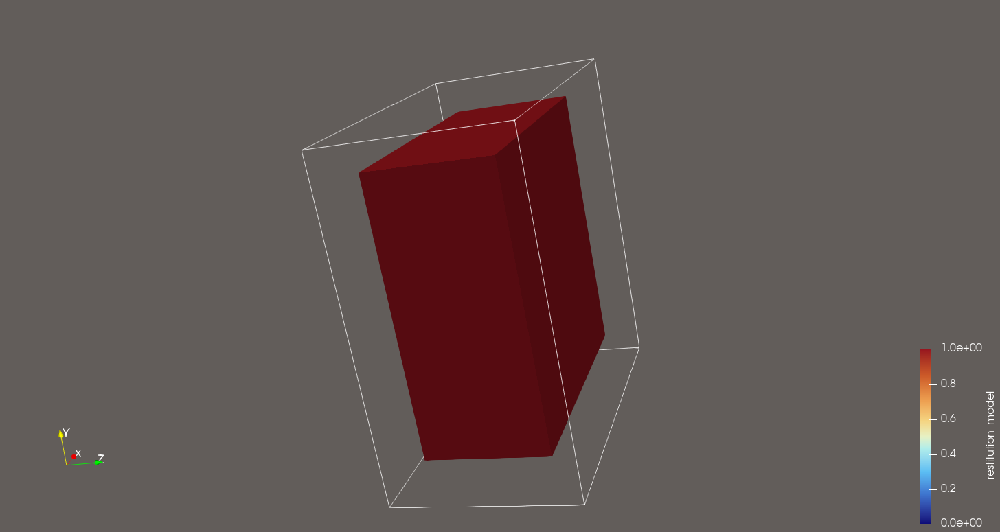
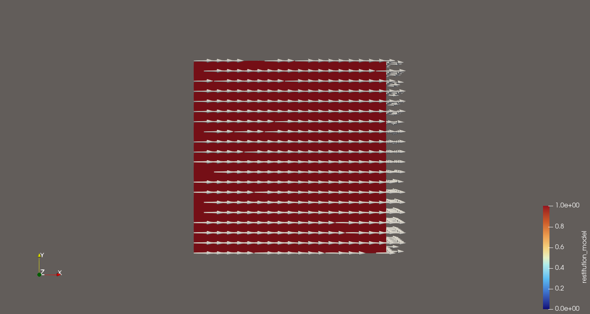
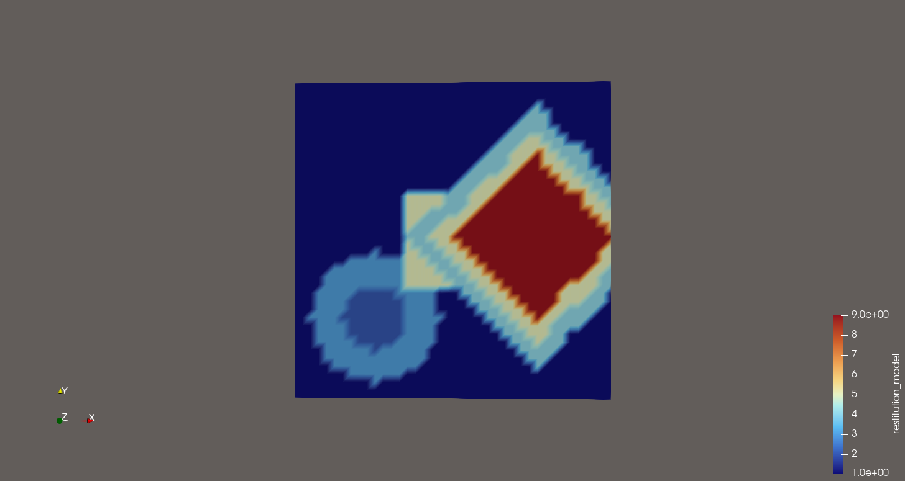

Arritmic3D: A fast Eikonal computational model for electrophysiology simulation
Arritmic3D is a fast Eikonal computational model for electrophysiology simulation.
The simulator has three versions in separate branches: branch main (this branch), with a development version, branch ventricle, with the ventricle version, and branch atria, with the atria version. Checkout the desired branch before proceeding.
This development branch is not fully functional and has some differences in the diffusion model with respect to the other two branches. Thus, this branch is not validated and should not be used for research purposes yet.
The original version of the solver was developed in the Java environment Processing. Now it is being migrated to C++ and provided with a Python interface.
Installation
Right now, you need to compile the wheel yourself. To compile it you need a standard C++17 compiler, Eigen and Pybind11 installed in your system.
As a reference, in an ubuntu machine it should be enough to run:
sudo apt-get install \
build-essential \
pkg-config \
cmake \
python3-dev \
gcc \
g++ \
libeigen3-dev \
python3-pybind11Then, clone the repository and compile the wheel by running:
python -m pip install .This command assumes that you have the build prerequisites installed in your python distribution. Namely, you need setuptools and wheel. You can install them using pip:
python -m pip install --upgrade pip setuptools wheelAn overview of Arritmic3D
The solver is presented as a C++ library with a Python interface. The main script to run simulations is arritmic3d. Typically, you will need a VTK file with the definition of the tissue to simulate and a configuration file.
The simulator expects a rectangular 3-dimensional domain, defined by a uniform grid. Each node in this grid is taken as a portion of cardiac tissue with its activation and conduction properties. These properties, which define the dynamics of electrophysiology of the tissue, are determined by a set of restitution models, that describe how the tissue behaves after a depolarization.
To use complex geometric domains, such as anatomical models of the heart, the rectangular domain can include void regions that do not belong to the tissue. These regions are defined by assigning a special restitution model index (0) to the corresponding nodes.
The simulator relies on a catalog of restitution models and each node is assigned a model from this catalog. Arritmic3D comes with two models (Ten Tuscher and TorOrd), but new models can be added as discussed below. The simulator requires a scalar field defined on the simulation domain that establishes which model has to be used in each node of the domain.
Cardiac tissue is known for having an anisotropic behavior. Fiber orientation can also be set per node, indicatig the direction along which activation propagates fastest. This parameter is optional, and isotropic behavior is simulated in its absence.
Finally, the simulation requires a series of external activations at certain tissue locations to start the propagation. In order to ease this task, activation regions can be defined, along with different stimulation protocols to be applied on a particular region.
A detailed description of the configuration parameters and input requirements is provided later. However, first we present a brief overview of how to run some basic examples.
Quick start example
The python script allows the execution of a simulation on a rectilinear grid (slab) with an S1-S2 protocol. You can just run the following command:
arritmic3d --test test_case/The case directory must not exist or be empty prior to running the command.
This command will run a simulation on a slab with some predefined parameters, applying an S1-S2 protocol with a first base cycle length (BCL) of 800 ms and a second BCL of 400 ms. The simulation will last for 3500 ms, and the results will be saved in the test_case/ directory in the form of a series of VTK files.
By running this example, you will have an idea of how the simulator works and the type of output it generates. In addition to the simulation result, arritmic3d will generate a configuration JSON file in the case directory, as well as a vtk with the input simulation domain in test_case/input_data, which you can use as a starting point for your own simulations. You can modify the configuration parameters to explore different scenarios.
Inspection of the test case
You can inspect the generated VTK files using ParaView.
Open the input VTK file, located in test_case/input_data/slab_input.vtk, to see the simulation domain. The slab is a rectangular grid with a uniform distribution of nodes. You can visualize the restitution_model point data field to see which restitution model is assigned to each node.
The domain is a rectangle that spans in the XY plane, with a small thickness in the Z direction. The slab has an outer layer of nodes with restitution_model equal to 0, which represent non-tissue. You can view the tissue region by applying a threshold filter to show only nodes with restitution_model greater than 0. The rest of the nodes have restitution_model equal to 1, indicating that they belong to tissue and will use the Ten Tuscher restitution model for healthy endocardium. Figure 2 shows the slab with the threshold applied. The arrows indicate the parameters that need to be set to visualize the tissue region.
restitution_model equal to 0).
If we change the coloring to the activation_region field, we can see the activation region defined for the S1-S2 protocol. In this case, the south side of the slab (the nodes with lowest Y value) has been assigned activation_region equal to 1, indicating that it is the pacing site for the protocol. Figure 3 shows the slab with the activation region highlighted.
Now, we can open the sequence of VTK files generated as output of the simulation. These files are located in the test_case/ directory. Each file corresponds to an instant of time in the simulation and contains different point data fields. If we apply the same threshold as before, we can visualize the activation wavefront propagating through the tissue. Make sure to hide the input slab. You can press the play button in ParaView to see the time evolution of the activation. Figure 4 shows the slab with the activation wavefront visible.

In the test case you will also find the configuration file used for the simulation, located at test_case/arr3D_config_run.json. In it, you will find parameters to determine the restutution models, the input file or the simulation duration, among others. The stimulation protocol is defined in the PROTOCOL section of the configuration file.
Running existing cases
Now that we have a a basic case, we can use it as a template for other simulations. The first thing we can do is to run the same case again, as is. To do so, we can run the following command:
arritmic3d test_case/This command will run the simulation again, using the same configuration file and input data as before. The results will be saved in the test_case/ directory, overwriting the previous results. You can open the new VTK files in ParaView to see the results, which should be identical to the previous run.
Now, let’s modify some parameters in the configuration file to see how they affect the simulation. For example, we can change the simulation duration to 2500 ms and the VTK output period to 5 ms. and reduce the BCL of the pacing protocol to 600ms and 300ms.
arr3D_config_run.json
{
...
"SIMULATION_DURATION": 2500,
"VTK_OUTPUT_PERIOD": 10,
"PROTOCOL": [
{
...
"BCL": [600, 300]
}
]
}Then, run again the simulation with the same command. Since we now have higher temporal resolution in the output, we will be able to see the activation wavefront more clearly in ParaView.
arritmic3d test_caseVTK files from the previous run may be present inside the case directory. Make sure to delete them before running the new simulation
Simulation output
During the simulation, VTK files are written to the case directory with the pattern:
<input_basename>_<time>.vtk(e.g.,slab_100.vtk,slab_200.vtk, …)
Each VTK contains the following point data fields:
| Field | Description |
|---|---|
State |
Current cell state. 0 means inactive and 2 means active. |
APD |
Action potential duration. |
DI |
Diastolic inverval. |
LastDI |
Last diastolic interval used in the computation of the APD. |
CV |
Conduction velocity. |
LAT |
Local activation time. |
LifeTime |
Cumulative time since last activation. |
Beat |
Beat counter per cell |
The output cadence is controlled by VTK_OUTPUT_PERIOD, and it can be enabled/disabled via VTK_OUTPUT_SAVE.
Runing simulations
Once we have an overall idea of how Arritmic3D works, we present a more detailed explanation of how to run simulations. To simulate a case using arritmic3d, you need:
- A VTK file containing a
RectilinearGridwith at least the required point data fieldrestitution_model. - A case directory to write results.
- A configuration file in JSON format.
- A set of restitution models, in the form of several CSV files.
The program is invoked from the command line by passing the case directory as an argument:
arritmic3d <case_directory>It will look for the configuration file inside case_directory. In the configuration file, VTK_INPUT_FILE sets the input file that defines the simulation domain.
The simulator is unit agnostic, and you can use any set of units provided that you are consistent across all inputs and parameters.
However, note that the default configuration and restitution models for APD and CV are defined in milliseconds and in millimeters per millisecond. Therefore if you want to change the units you will need to adapt the restitution models accordingly.
Definition of the simulation domain
For the Python interface, this domain definition is done using an input VTK file. The input VTK file has to store a RectilinearGrid that includes, at least, the following point data field:
- restitution_model: An integer field indicating the restitution model to be used for each cell. This field is used to define the cells that belong to tissue and to select the restitution model for each cell. Nodes with
restitution_modelequal to 0 are considered non-tissue (void). The value for tissue regions starts from 1 upwards. The mapping betweenrestitution_modelvalues and the corresponding restitution model files is defined in a separate CSV file specified in the configuration, as described in Section 6.
Additionally the following optional point data fields can be defined:
- fibers_orientation: A 3-component vector field representing the orientation of the fibers in each cell. To define isotropic conduction, set all components to zero. If this field is not present, isotropic conduction is assumed for all cells.
- activation_region: An integer field that defines different regions on the tissue where activation is wanted. This field is used to define activation regions, such as the pacing sites for a pacing protocol or the PMJs. The activation times are defined in the configuration file and can refer to these regions by ID. Activations can be explicitly prescribed at certain node IDs when defining the activation in the configuration file as described in Section 6.1.
Setting configuration parameters
You can set the configuration parameters in two ways: using a configuration JSON file or passing configuration options via the command line interface (CLI).
By default, the program looks for a configuration JSON file in the case directory, but you can also specify a different configuration file using the --config-file option:
arritmic3d <case_directory> --config-file path/to/config.jsonConfiguration files are handled as follows:
- If
--config-fileis provided, it is used (error if it does not exist). - If
--config-fileis not provided, the program looks in<case_directory>(prefersarr3D_config.json, otherwise the first*.json). - If no JSON is found, built‑in defaults are used so that you can run without a config file.
Addtionally, you can override specific configuration parameters directly from the command line using the -p KEY=VALUE option. This option can be used multiple times to set different parameters.
For instance, when we ran the test case, we modified the configuration file located in the case directory to change the frequency at which VTK files are written. Instead of modifying the file we could have changed these parameters directly from the command line as follows:
arritmic3d test_case/ -p VTK_OUTPUT_PERIOD=5 -p SIMULATION_DURATION=2500Arritmic3D would have used the configuration file in test_case/, but the value of VTK_OUTPUT_PERIOD and of SIMULATION_DURATION would have been overridden to 5 ms and 2500 ms respectively. In this way, you can easily modify specific parameters without changing the configuration file.
Arritmic3D uses the following precedence rules when combining configuration sources: CLI overrides have priority over JSON values (i.e. -p KEY=VALUE overrides the same key in the JSON), and --input-file overrides VTK_INPUT_FILE from the JSON.
Backup of the run configuration
The actual configuration used in the execution is the result of combining the base JSON (if any) with all CLI overrides (including --input-file). We call this the run configuration. For reproducibility, this exact configuration is written to disk so the run can be replicated.
The configuration used for the run is saved to <case_directory>/arr3D_config_run.json. You can disable saving of the run configuration with --no-output-run-config.
Paths and reproducibility
In order to facilitate reproducibility and sharing of cases, paths are handled as follows:
- All paths passed as command line arguments (e.g.,
--config-file,--input-file, or-p KEY=VALUEfor path values) are interpreted relative to the current working directory. - Paths read from JSON files are interpreted relative to the location of the JSON file being loaded (whether from case_dir or via
--config-file). - The run configuration saved to
case_dir/arr3D_config_run.jsonconverts paths and stores them relative to the case directory, to ease sharing and reproducibility.
The configuration file
The configuration file is a JSON file with the following parameters:
| Field | Description |
|---|---|
CV_MODEL_CONFIG_PATH |
Path to the csv configuration file of the conduction velocities models. |
APD_MODEL_CONFIG_PATH |
Path to the csv configuration file of the action potential duration models. |
| Field | Description |
|---|---|
COND_VELOC_TRANSVERSAL_REDUCTION |
Reduction factor for transversal conduction velocity. |
CORRECTION_FACTOR_APD |
Correction factor for action potential duration (APD). |
CORRECTION_FACTOR_CV |
Correction factor for conduction velocity. |
ELECTROTONIC_EFFECT |
Factor accounting for electrotonic effects in tissue. |
INITIAL_APD |
Initial action potential duration. |
| Field | Description |
|---|---|
VTK_OUTPUT_SAVE |
If true, saves VTK output files. |
VTK_OUTPUT_PERIOD |
Time interval between VTK outputs. |
VTK_INPUT_FILE |
Path to the input VTK file. |
| Field | Description |
|---|---|
SIMULATION_DURATION |
Total duration of the simulation. |
PROTOCOL |
Stimulation protocol settings, using an \(S_1,S_2,...,S_n\) pacing protocol. It is a list of dictionaries, each with the following fields:
|
ACTIVATE_NODES |
List of dictionaries defining specific activation times for nodes. Each dictionary has the following fields:
|
The definition of large activation regions and cumbersome protocols can lead to unreadable configuration files. To facilitate the definition of stimulation protocols involving many nodes with different activation times, it is possible to use external JSON files.
- In the
PROTOCOLdictionary, they can be used in place of theACTIVATION_REGIONandFIRST_ACTIVATION_TIMEfields. In this case, the files must contain a single JSON list with the node IDs and the first activation time, respectively. Both lists must have the same length. - In the
ACTIVATE_NODESdictionary, theACTIVATION_REGIONfield can also be replaced by an external JSON file containing a list of lists with the form[ID,time,beat], where theIDis a node ID. In this case, theACTIVATION_TIMESfield is not needed and is ignored if present.
Defining stimulation protocols
Next you will find some examples of how to define stimulation protocols in the configuration file.
Let’s start with a simple S1-S2-S3-S4 protocol example.
"PROTOCOL": [
{
"ACTIVATION_REGION": [2443, 2462, 2861, 2880],
"N_STIMS_PACING": [8, 2, 1, 1],
"BCL": [600, 400, 300, 200]
}
]This example defines a protocol with pacing site formed by nodes 2443, 2462, 2861, 2880 (this points correspond to the four corners of the \(Z=1\) section of the slab). The protocol consists of 8 stimuli at a BCL of 600 ms, followed by 2 stimuli at a BCL of 400 ms, then 1 stimulus at 300 ms, and finally 1 stimulus at 200 ms.
When activating a region using point ids, make sure this points correspond to actual cardiac tissues (they should have restitution_model distinct from 1).
If you try to activate a void cell, the simulator will output a warning.
N_STIMS_PACING and BCL lists do not need to have the same length. If they differ, the last value of the shorter list is repeated until both lists have the same length. For instance, the following is equivalent to the previous example.
"PROTOCOL": [
{
"ACTIVATION_REGION": [2443, 2462, 2861, 2880],
"N_STIMS_PACING": [8, 2, 1],
"BCL": [600, 400, 300, 200]
}
]Note that here, N_STIMS_PACING has 3 values, while BCL has 4 values; thus, the last N_STIMS_PACING value (1) is repeated to match the length of the BCL list.
The activation time of the first stimulus can be set using the FIRST_ACTIVATION_TIME field. For example, the following protocol starts the first activation at 50 ms.
"PROTOCOL": [
{
"ACTIVATION_REGION": [2443, 2462, 2861, 2880],
"N_STIMS_PACING": [8, 2, 1],
"BCL": [600, 400, 300],
"FIRST_ACTIVATION_TIME": 50
}
]Note that using this option will not change the numer of activations, only the time at which the first activation occurs. In this case, the first activation will occur 50 ms after the simulation starts. This can generate an apparent mismatch between the first activation time and the BCL schedule. This option is an advanced setup, and is only meant to add flexibility to the protocol definition if the starting state of the tissue considers a certain activation state. That is, the previous example could be useful with a tissue that was activated 550ms before the simulation started, so that the first activation must occur at 50 ms (600ms after the last activation). If this field is not provided (which is the recommended option), the first activation time is set to the value of the first BCL (which would be 600 ms after the simulation start in the previous example). This option also admits as input a list of first activation times (one for each activation region).
External files can be used to reduce the size of the configuration file when the activation must be defined for each node separately. The first example can be rewritten as follows:
"PROTOCOL": [
{
"ACTIVATION_REGION": "cases/slab_test_protocol_sites_beat1.json",
"FIRST_ACTIVATION_TIME": "cases/slab_test_protocol_first_activation_beat1.json",
"N_STIMS_PACING": [8, 2, 1, 1],
"BCL": [600, 400, 300, 300]
}
]Where:
slab_test_protocol_sites_beat1.json
[2443, 2462, 2861, 2880]slab_test_protocol_first_activation_beat1.json
[50, 55, 72]This example shows how to define different first activation times for each node in the pacing site. This can be useful, for instance, when we have the activation time at PMJs in ventricle.
The following example shows a protocol with two different pacing sites, each with its own activation schedule. It also illustrates the use of the FIRST_BEAT_NUM field to customize beat numbering. Note that the slabs we have built so far do not have multiple activation regions, so this example is only illustrative.
"PROTOCOL":
[
{
"ACTIVATION_REGION": 1,
"FIRST_ACTIVATION_TIME": 100,
"N_STIMS_PACING": [3, 2],
"BCL": [800, 500]
},
{
"ACTIVATION_REGION": 2,
"FIRST_ACTIVATION_TIME": 600,
"N_STIMS_PACING": [3, 2],
"BCL": [800, 500],
"FIRST_BEAT_NUM": 6
}
]Each activation is assigned a beat number, which can be used to detect reentries. When using PROTOCOL to activate tissue, the first activation at each pacing site is assigned beat number 1, and subsequent activations increment the beat number by 1. However, you can customize the beat numbering by using the FIRST_BEAT_NUM field to decide the starting beat number. This can help distinguish activations from different pacing sites or protocols. In the previous example, the beats from the first pacing site are numbered in the range 1 to 5, while the beats from the second pacing site start from beat number 6.
Activating by node id + time
Activation times can be prescribed explicitly for each node using the ACTIVATE_NODES parameter. ACTIVATION_REGION works as explained above, and ACTIVATION_TIMES consists of a list of pairs [ACTIVATION_TIME, BEAT].
Here is an example:
"ACTIVATE_NODES" : [
{
"ACTIVATION_REGION": [2443, 2462, 2861, 2880],
"ACTIVATION_TIMES": [[500,1],[550,2]]
},
{
"ACTIVATION_REGION": 1,
"ACTIVATION_TIMES": [[1500,4],[1550,5]]
}
]This example defines specific activation times for nodes 2443, 2462, 2861, 2880 at 500 ms (beat 1) and 550 ms (beat 2), and for nodes with activation_region value 1 at 1500 ms (beat 4) and 1550 ms (beat 5). Note the difference between using a list of node IDs and an integer referring to the activation_region field in the VTK file. When using ACTIVATE_NODES, you must always explicitly set the beat number for each activation in the ACTIVATION_TIMES list.
External files can also be used as follows:
"ACTIVATE_NODES" : [
{
"ACTIVATION_REGION" : "cases/slab_test_stim_nodes_beat1.json"
}
]where:
slab_test_stim_nodes_beat1.json
[
[2443,500,1],
[2462,550,2],
[2861,600,3],
[2880,650,4]
]In this case, the first value in each tuple contains a node ID, the second value the activation time, and the third value the beat number.
Definition of restitution models
The restitution models can be defined by means of restitution curves or surfaces, as described in (Dolors Serra, Romero, et al. 2022), (Romitti et al. 2025). A restitution curve is a function that provides the next Action Potential Duration (APD) of a cell as a function of the Diastolic Interval (DI) at activation. A restitution surface is a function that provides the next APD of a cell as a function of its last APD and the DI at activation.
The simulator needs a restitution model for each tissue type (representing, e.g. tissue region, as in endo/mid/epi, or type, such as healthy/border zone). The restitution models (curves or surfaces) are encoded as a table in a CSV file. Another CSV file must indicate the tissue region-type that is modeled in each table. Actually, all the models are treated as surfaces, even if they are curves. In that case, the table will have a single row for each previous APD value, with an ourput APD value for each DI.
The following CSV corresponds to a restitution model
0.0 , 30.0 , 35.0 , 40.0 , 45.0 , 50.0
95.5 , -1.0 , 89.44, 89.67, 89.90, 90.13
99.5 , 89.64, 89.87, 90.10, 90.32, 90.52
103.5, 90.73, 90.95, 91.17, 91.38, 91.59
107.5, 91.67, 91.88, 92.09, 92.30, 92.50For the restitution model CSV table shown above, the first row contains the Diastolic Interval (DI) values measured in milliseconds. The first column lists the previous Action Potential Duration (APD) values, also in milliseconds. The remaining cells in the table contain the computed next APD values in milliseconds. Note the use of -1.0 to indicate that no activation occurs for that combination of previous APD and DI.
Dead (Core Zone) tissue can be modeled by setting the restitution model index to 0. But, if desired, it can also be mapped to a table that always returns -1.0 for any input values.
0.0 , 30.0
100 , -1.0The actual values for DI and previous APD are not relevant in this case, as no activation will ever occur.
Important considerations for the restitution table format:
- The table must include the minimum DI value that allows cell activation, along with the preceding DI value. For the preceding value, use -1 to indicate no activation occurs. That is, in every row, at least the first column must contain -1 for the DI value that precedes the minimum activation DI value. This ensures that the model can correctly identify the threshold for activation.
- For APD or DI input values that fall outside the table’s defined ranges, the model applies flat extrapolation to determine the output values.
Mapping tissue region-types to restitution model files
The field restitution_model in the input VTK file indicates the tissue region-type for each cell. The value of this field is used to select the restitution model for each cell according to the mapping provided in the second CSV file.
To specify which tissue regions use which restitution models, a separate CSV file maps the region types to table indices. For example:
1 , TenTuscher_APD_BZ_Mid.csv
2 , TenTuscher_APD_BZ_Epi.csv
3 , TenTuscher_APD_Healthy_Mid.csvThe simulator reads this configuration files from the CV_MODEL_CONFIG_PATH and APD_MODEL_CONFIG_PATH configuration parameters.
As discussed, index ‘0’ is reserved for non-tissue regions and cannot be used.
Generating tissue slabs
Using the build_slab utility, you can generate a rectangular tissue domain (a tissue slab) for testing. This script creates a VTK file with the required fields for simulation.
For example, to generate a slab with 10 nodes in X, 10 in Y, and 5 in Z, with spacing of 0.05 mm, run:
build_slab cases/slab.vtk --nnodes 10 10 5 --spacing 0.05 0.05 0.05This will create a VTK file at cases/slab.vtk with the necessary structure and a point data field named restitution_model with a value of 1. You can customize the grid size, spacing, and additional options using the script arguments.
Note that a value of nnodes equal to 10 means that the slab will have 10 points in each dimension (0 to 9), resulting in a grid size of 9 * spacing in each dimension.

restitution_model.Setting default values for point data fields
You can set default values for point data fields using the --field FIELD_NAME VALUE option. This option can be used multiple times to set different fields. For example, to set the default restitution model to 1 and the fibers orientation to \([1,0,0]\), run:
build_slab cases/slab.vtk --nnodes 20 20 5 --spacing 0.05 0.05 0.05 \
--field restitution_model 1 \
--field fibers_orientation [1,0,0]
Setting the default restitution model
In particular, and as mentioned above, you can set the restitution model for all tissue nodes using the --field option. This will set the base restitution model that can be later modified using regions (see next section). For example, to set the default restitution model to 2, run:
build_slab cases/slab.vtk --nnodes 20 20 5 \
--spacing 0.05 0.05 0.05 --field restitution_model 2Modifying properties by region
It is possible to modify the value of any field (and, in particular, the restitution-model identifier) at the points in a particular region of the generated slab. Supported region shapes are circle (inner core + outer ring), square, and diamond (45°-rotated square). Each region is specified in world distance units (the same units as --spacing) and updates the restitution_model point-data field accordingly. Regions are applied in sequence and later regions overwrite earlier ones in case of overlap.
You can create such regions in the generated slab using the following CLI options.
--regions-file PATHPath to a JSON file that contains a list of region objects. Each object must be a JSON object describing a region (see schema below). The file is loaded first.--region JSON(repeatable) Add a region by passing a JSON object string on the command line. This option can be used multiple times; each occurrence appends a region. CLI regions are processed after the regions file and therefore override file regions on overlap.
Regions schema and behavior
Each region object is a JSON object with the following schema:
- circle:
{
"shape":"circle",
"cx":float, "cy":float,
"r1":float, "r2":float,
<field>: scalar|[...]
}- square:
{
"shape":"square",
"cx":float, "cy":float,
"r1":float, "r2":float,
<field>: scalar|[...]
}- diamond:
{
"shape":"diamond",
"cx":float, "cy":float,
"r1":float, "r2":float,
<field>: scalar|[...]
}- side:
{
"shape":"side",
"side": "north" | "south" | "east" | "west",
<field>:value
}- node_ids:
{
"shape":"node_ids",
"ids":[int,...],
<field>:value
}Here, <field> can be any point data field name (e.g., "restitution_model", "activation_region").
For circle/square/diamond, field values can be either a scalar or a list, in which case a gradient with first element at r1 and last at r2 is produced.
- Precedence: regions are applied in this order: regions from
--regions-filefirst, then regions supplied via--regionin the order given, and finally the legacy single-region flags (--add_square,--add_circle,--add_diamond). Later regions overwrite earlier ones on overlap. - Validation: input is strictly validated. If a region object is missing required fields or has invalid types, the script raises an explanatory exception and stops..
- Units: all coordinates and distances in region objects are interpreted in world distance units (the same units as
--spacingand grid coordinates).
Examples
Regions can be provided either directly through the command line:
build_slab cases/slab.vtk --nnodes 20 20 5 --spacing 0.05 0.05 0.05 \
--region '{"shape":"square","cx":0.5,"cy":0.5,"r1":0.05,"r2":0.1,"restitution_model":7}' \
--region '{"shape":"circle","cx":0.1,"cy":0.1,"r1":0.1,"r2":0.4,"restitution_model":[1,2,3]}'Using an external file
build_slab cases/slab.vtk --nnodes 20 20 5 --spacing 0.05 0.05 0.05 \
--regions-file ./cases/regions_example.jsonwhere
regions_example.json
[
{ "shape":"circle", "cx":0.5, "cy":0.5, "r1":0.2, "r2":0.4, "restitution_model":[2, 3] },
{ "shape":"square", "cx":1.0, "cy":1.0, "r1":0.15, "r2":0.3, "restitution_model":[4, 5] }
]Or using a mix of both:
build_slab cases/slab.vtk --nnodes 40 40 5 --spacing 0.05 0.05 0.05 \
--regions-file ./cases/regions_example.json \
--region '{"shape":"diamond","cx":1.5,"cy":1.0,"r1":0.5,"r2":0.8,"restitution_model":[9,5,4]}'
diamond was inputed last, it ovewrote the intersecting square region.Activation regions (stimulation or pacing sites) are defined using the same region system for restitution models and other fields, targeting the activation_region field. Any region shape (circle, square, diamond, side, node_ids) can be used to set activation_region values.
Convenience options to define activation regions
For common activation scenarios, two convenience CLI options are provided:
--region-by-side SIDE REGION_IDDefines an entire slab side as an activation region.SIDEmust be one of:north,south,east,west.REGION_IDis the integer value to assign toactivation_region. This option can be repeated to activate multiple sides with different region IDs.--region-by-node-ids NODE_ID [NODE_ID ...] REGION_IDDefines a region based on specific nodes by their IDs. All arguments except the last are node IDs; the last argument is theREGION_IDto assign. This option can be repeated to create multiple activation groups.
For example, you can:
- Activate multiple sides with different region IDs
build_slab cases/slab.vtk --nnodes 50 50 5 --spacing 0.05 0.05 0.05 \
--region-by-side south 1 \
--region-by-side north 2- Activate specific nodes
build_slab cases/slab.vtk --nnodes 50 50 5 --spacing 0.05 0.05 0.05 \
--region-by-node-ids 2443 2462 2861 2880 1- Combine geometric regions with activations
build_slab cases/slab.vtk --nnodes 50 50 5 --spacing 0.05 0.05 0.05 \
--region '{"shape":"square","cx":1.225,"cy":1.225,"r1":1.0,"r2":1.0,"size":1.0,"restitution_model":5}' \
--region-by-side south 1 \
--region-by-node-ids 2443 2462 2861 2880 2The convenience options --region-by-side and --region-by-node-ids are internally converted to region objects and applied in the same sequence as --region entries. Activations defined via these options are processed after --regions-file and --region, so they can overwrite previous values on overlap.
Gradient support for geometric regions
For geometric regions (circle, square, diamond), a gradient can be set for a smooth transition of field values between the inner radius r1 and outer radius r2. This allows for gradual changes in properties across the region. The gradient is defined by providing a list of values for the field. The interpretation depends on the value provided:
- Scalar: Applied uniformly at
r2(outer radius/size). - List: Creates a smooth transition between
r1andr2. The first value of the list applies atr =< r1, the last atr2, and intermediate values are set at uniform intervals betweenr1andr2.
To set vector fields, the list can contain vectors to define a gradient of vectors. If a uniform vector is desired, provide a list with a single vector. For instance, to set a uniform fiber orientation of [1,0,0], use "fiber_orientation" : [ [1,0,0] ].
For existing vector fields, if the type of the previous field is different from the provided value, then an error is raised.
Single values (scalar or single value lists) are applied at r2. Also, if a list is provided but r1 == r2, then the first element is applied to the entire region (where r =< r1).
Some examples:
- An uniform scalar value at \(r \leq r1\)
--region '{"shape":"circle","cx":1.0,"cy":1.0,"r1":0.2,"r2":0.2,"restitution_model":3}'- An uniform vector field at \(r \leq r1\)
--region '{"shape":"square","cx":1.0,"cy":1.0,"r1":0.15,"r2":0.15,"fibers_orientation":[[1,0,0]]}'- A scalar gradient (3 layers interpolated between \(r1\) and \(r2\))
--region '{"shape":"circle","cx":1.0,"cy":1.0,"r1":0.2,"r2":0.6,"restitution_model":[5,4,3]}'- A gradient of vectors
--region '{"shape":"square","cx":0.5,"cy":0.5,"r1":0.1,"r2":0.3,"fibers_orientation":[[1,0,0],[0,1,0]]}'- In the scalar gradient
[5,4,3]: model 5 is at \(r1=0.2\), model 4 is at midpoint (\(r \approx 0.4\)) and model 3 at \(r2=0.6\). - For uniform application across the entire circular/square/diamond region, use
r1 == r2.
Direct execution of tissue slabs
The arritmic3d script includes a --slab option that allows you to directly build and run a slab simulation without needing to create the VTK file separately. This option generates a rectilinear grid slab based on the provided parameters and runs the simulation using default or specified configuration settings.
When using --slab, you can use in arritmic3d the same options available in build_slab to define the slab properties and regions. For instance:
arritmic3d case_dir --slab --nnodes 20 20 5 --spacing 0.05 0.05 0.05 \
--region '{"shape":"square","cx":0.5,"cy":0.5,"r1":0.05,"r2":0.1,"restitution_model":7}' \
--region-by-side 'south' 1 \
-p ACTIVATE_NODES='[{"ACTIVATION_REGION" : 1,"ACTIVATION_TIMES":[[500,1],[1000,1]]}]'In this example, the lower margin of the slab (south side) is defined as an activation with region ID 1, and specific activation times are defined for nodes with that region ID. Further details on defining regions and activation sites can be found in the respective sections of this README.
When using --slab, the generated VTK will be used. In this case, you are not allowed to use the --input-file option and any VTK_INPUT_FILE present in the JSON will be ignored.
Citation
@article{serra2022,
author = {Serra, Dolors and Romero, Pau and Garcia-Fernandez, Ignacio
and Lozano, Miguel and Liberos, Alejandro and Rodrigo, Miguel and
Bueno-Orovio, Alfonso and Berruezo, Antonio and Sebastian, Rafael},
publisher = {Multidisciplinary Digital Publishing Institute},
title = {An {Automata-Based} {Cardiac} {Electrophysiology} {Simulator}
to {Assess} {Arrhythmia} {Inducibility}},
journal = {Mathematics},
volume = {10},
number = {8},
pages = {1293},
date = {2022-04-13},
url = {https://doi.org/10.3390/math10081293},
doi = {10.3390/math10081293},
issn = {2227-7390},
langid = {en}
}